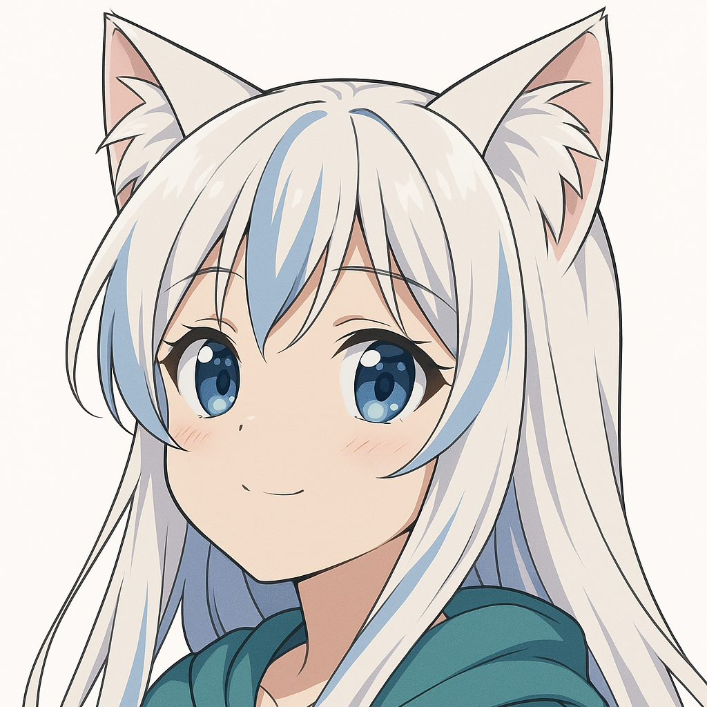

Kurema
“Everything will be okay if you smile, nya~!”
Adorable, dreamy, and naive. In charge of cleaning and entertaining the café. She has a smile that melts hearts... and hurts she hides behind it.
Fun fact: She collects decorative spoons. She believes each one has a name.
Bomi
“I’m not cute! ... And don’t touch my head!”
The middle sister, organized and responsible. She handles the kitchen and accounting duties for the cafe. A gentle tsundere who longs for someone to hug her.
Fun fact: She has a secret diary where she writes what makes her happy (although she vehemently denies it).
Kuramiru
“Did you know that cold coffee can have more personality than hot coffee?”
Coffee barista, guitarist, and free spirit. Always with a knowing smile, she was the first to decide that nothing would dim her inner glow.
Fun fact: records songs with made-up lyrics about his sisters... in secret.